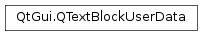

QTextBlockUserData¶
Detailed Description¶
The
PySide2.QtGui.QTextBlockUserDataclass is used to associate custom data with blocks of text.
PySide2.QtGui.QTextBlockUserDataprovides an abstract interface for container classes that are used to associate application-specific user data with text blocks in aPySide2.QtGui.QTextDocument.Generally, subclasses of this class provide functions to allow data to be stored and retrieved, and instances are attached to blocks of text using
QTextBlock.setUserData(). This makes it possible to store additional data per text block in a way that can be retrieved safely by the application.Each subclass should provide a reimplementation of the destructor to ensure that any private data is automatically cleaned up when user data objects are deleted.
See also
-
class
PySide2.QtGui.QTextBlockUserData¶
© 2018 The Qt Company Ltd. Documentation contributions included herein are the copyrights of their respective owners. The documentation provided herein is licensed under the terms of the GNU Free Documentation License version 1.3 as published by the Free Software Foundation. Qt and respective logos are trademarks of The Qt Company Ltd. in Finland and/or other countries worldwide. All other trademarks are property of their respective owners.